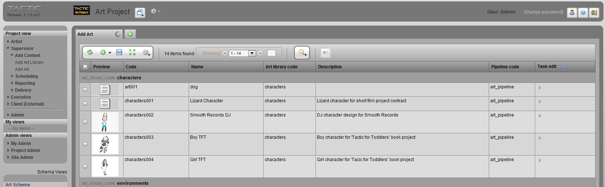

When you log in to TACTIC from your browser, you will see a window similar to the following image. This section describes some of the important parts of this window.

Header [Left]

The project bar shows the TACTIC logo and a thumbnail representing the current project.
Header [Right]

Lets you link to the documentation, sign out, or switch between projects.
Project Views Sidebar

Lets you access all Project Views and "My Views".
Schema Sidebar

Displays the project schema and the TACTIC system and administration schemas. Access to this sidebar is generally reserved for admin level users.
Main Panel

The main panel shows views of selected search types and toolsets. (To load search types or toolsets into a separate popup window, hold down the Shift key when you click on them.)